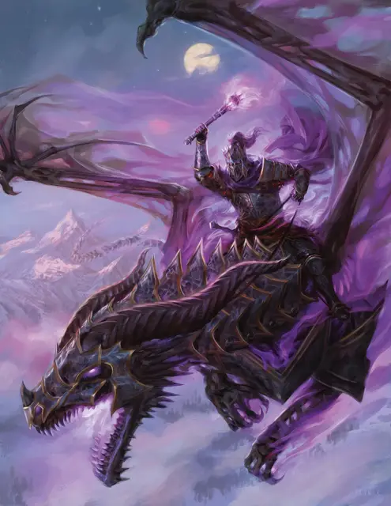

Лорд Сот
Lord Soth
Средняя Нежить (Паладин), законно-злая, именной НИП

Класс Доспеха 18 (латы)
Хиты 228 (24к8 + 120)
Скорость 30 футов
| мод | спас | ||
|---|---|---|---|
| СИЛ | 22 | +6 | +6 |
| ЛОВ | 11 | +0 | +6 |
| ТЕЛ | 20 | +5 | +5 |
| мод | спас | ||
|---|---|---|---|
| ИНТ | 12 | +1 | +1 |
| МДР | 16 | +3 | +9 |
| ХАР | 20 | +5 | +11 |
Иммунитет к урону некротическая энергия, яд
Иммунитет к состояниям испуг, истощение, отравление
Чувства тёмное зрение 120 футов, пассивное Восприятие 13
Языки Общий, Инфернальный, Соламнийский
Опасность 19 (22000 опыта)
Бонус мастерства +6
Особенности
Легендарное сопротивление (3/день). Если Сот проваливает спасбросок, он может вместо этого сделать спасбросок успешным.
Сопротивление магии. Сот совершает с преимуществом спасброски от заклинаний и прочих магических эффектов.
Предводитель нежити. Если Сот дееспособен, он и все существа, являющиеся нежитью, по его выбору в пределах 60 футов от него совершают с преимуществом спасброски от эффектов, изгоняющих нежить.
Необычная природа. Сот не нуждается в воздухе, еде, питье и сне.
Действия
Мультиатака. Сот совершает три атаки Факелом Отрёкшегося.
Факел Отрёкшегося. . Рукопашная атака оружием: +12 к попаданию, досягаемость 5 фт., одна цель. Попадание: 10 (1к8 + 6) дробящий урон плюс 18 (4к8) урона некротической энергией, и если цель — существо, оно не может восстанавливать хиты до начала следующего хода Сота.
Огонь Катаклизма (1/день). Сот бросает магический шар огня, который взрывается в точке, которую он может видеть в пределах 120 футов. Все существа в сфере радиусом 20 футов с центром в этой точке должны совершить спасбросок Ловкости Сл 19. Существо получает 35 (10к6) урона огнём и 35 (10к6) урона некротической энергией при провале, или половину этого урона при успехе.
Помимо этого, любой гуманоид Среднего или меньшего размера, убитый этим уроном, и все трупы подобных существ внутри сферы, становятся скелетами [skeleton] под контролем Сота. Скелеты действует с такой же инициативой как у Сота, но сразу после его хода. При отсутствии других команд скелет пытается убить любое существо, не являющееся Нежитью, с которыми он сталкивается.
Использование заклинаний. Сот накладывает одно из следующих заклинаний, не нуждаясь в материальных компонентах. Его базовой характеристикой является Харизма (Сл спасброска 19):
• Неограниченно: приказ [command] (ячейкой 8-го уровня)
• 2/день каждое: рассеивание магии [dispel magic], удержание личности [hold person] (ячейкой 3-го уровня)
• 1/день: изгнание [banishment] (ячейкой 6-го уровня)
Слово смерти (1/день). Сот указывает на существо, которое он может видеть в пределах 60 футов, и магическим образом приказывает ему умереть. Цель должна совершить спасбросок Телосложения Сл 19, получая 100 урона некротической энергией при провале или половину этого урона при успехе. Цель умирает, если этот урон уменьшает её хиты до 0.
Легендарные действия
Сот может совершить 3 легендарных действия, выбирая из представленных ниже вариантов. За один раз можно использовать только одно легендарное действие, и только в конце хода другого существа. Сот восстанавливает использованные легендарные действия в начале своего хода.
• Неумолимый манёвр. Сот перемещается на расстояние, не превышающее его скорость или приказывает осёдланному им скакуну переместится на расстояние, не превышающее его скорость. При перемещении с помощью этого действия не провоцирует атаки. Если он или его скакун перемещаются в пределах 5 футов от существа, он может заставить это существо совершить спасбросок Силы Сл 20. При провале существо будет сбито с ног.
• Удар (стоит 2 действия). Сот совершает одну атаку Факелом Отрёкшегося.
• Накладывание заклинания (стоит 3 действия). Сот накладывает заклинание.
Описание
Лорд Сот — самый могущественный рыцарь смерти в Кринне. Когда то давно Сот был членом ордена Розы Рыцарей Соламнии, образцом добродетели и справедливости, но гордость заставила его свернуть на путь зла. Боги дали Соту шанс на искупление, поручив ему сразиться со королём-жрецом Истара и предотвратить Катаклизм. Однако, его погубила гордыня. Он отказался от своей миссии и позволил Катаклизму опустошить Кринн. Сот погиб во время Катаклизма, но затем восстал из пепла в виде ужасной нежити. Долгое время, пребывая в своей проклятой Даргаардской башне, Сот не обращал внимания на разрушенный мир. Но призыв Королевы драконов вновь пробудил его злобу.
В бою Сот внушает ужас, используя разрушительный эффект последних остатков огней Катаклизма. Обычно он использует свои заклинания только в качестве легендарных действий.